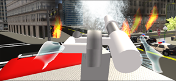
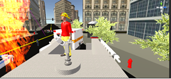
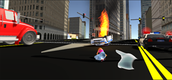
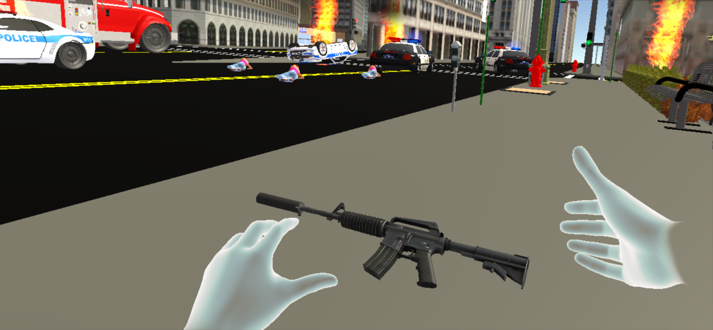
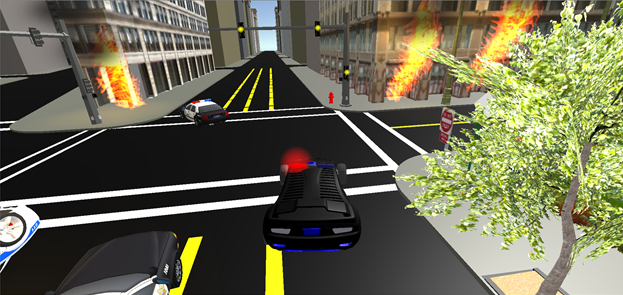

Megacity: A Collaborative Virtual Reality Environment for Emergency Response, Training, and Decision Making
Current Students: Phillip Devreaux
Status: Current
Collaborator: Complex Ground Systems & Operations Branch of the Human Research Engineering Directorate of the Army Research Laboratory (ARL), APG, MD.
The simulation of human behavior with avatars and agents in virtual reality (VR) has led to an explosion of training and educational research. The use of avatars (user-controlled characters) or agents (computer-controlled characters) may influence the engagements of the user experience for emergency response, and training in emergency scenarios. Our proposed collaborative VR megacity environment offers flexibility to run multiple scenarios and evacuation drills for disaster preparedness and response. Modeling such an environment is very important because in the real-time emergencies we experience in day-to-day life, there is a need for preparation to extreme events. These emergencies could be the result of fire, smoke, gunman threat, or a bomb blast in a city block. The collaborative virtual environment (CVE) can act as a platform for training and decision making for SWAT teams, fire responders, and traffic clearance personnel. The novelty of our work lies in modeling behaviors (hostile, non-hostile, selfish, leader-following) for computer-controlled agents so that they can interact with user-controlled agents in a CVE.
We have used game creation as a metaphor for creating an experimental setup to study human behavior in a megacity for emergency response, decision-making strategies, and what-if scenarios. Our proposed collaborative VR environment includes both immersive and non-immersive environments. The participant can enter the CVE setup on the cloud and participate in the emergency evacuation drill, which leads to considerable cost advantages over large-scale, real-life exercises. We present two ways for controlling crowd behavior. The first defines rules for agents, and the second provides controls to the users as avatars to navigate in the VR environment as autonomous agents. Our contribution lies in our approach to combine these two approaches of behavior to perform virtual drills for emergency response and decision making.
 
 
Fully immersed user-controlled fire fighter putting out fire in the Megacity VR environment.
Medic pointing to where help is needed. ............Soldier reaching for weapon using oculus rift
Megacity in CVE shows an officer, a patient lying on the ground in need of care, emergency response vehicles, and police car for an emergency situation
Red and blue computer-controlled agents together with a user-controlled agent
Red and blue computer-controlled agents together with a user-controlled agent.

View of a autonomous police car as a client
Oculus Rift version of the Megacity CVE
We have incorporated user-controlled characters as avatars and computer-controlled characters as agents in our proposed megacity CVE. The participants as avatars can enter the collaborative VR environment in megacity as autonomous agents. On the other hand, the computer-controlled characters as agents are implemented with different behaviors such as the following:
Hostile Agent Behavior. Hostile agents are the red agents in the collaborative environment who create diversions and distractions for user-controlled avatars. They are aggressive agents who distract the avatars during evacuation. Characteristics of their hostile behaviors include refusal to follow emergency response leaders, pushing other agents out of their way, and the displaying of panic body language.
Non-Hostile Agent Behavior. Non-hostile agents are green agents in the collaborative environment. They have group behavior associated with them and goal-following behavior implemented. During evacuation they navigate toward the assigned goal. A secondary goal of group behavior is also associated with the non-hostile agents. As a result, the non-hostile agents try to group together while navigating toward the goal.
Leader-Following Agent Behavior. Leader-following agents are the blue agents in the CVE. They have a proximity sensor associated with them. As a result, when the user-controlled avatars are in proximity, they follow the avatars.
Goal-Following Agent Behavior. Goal-following agents are purple agents in the CVE. These agents are calm agents. They calmly navigate to an assigned goal when the evacuation behavior is triggered in the CVE.
Selfish Agent Behavior. Selfish agents are orange agents in the CVE. At the start of the simulation some computer-controlled agents could be assigned as selfish agents. Selfish agents may give false information and it will be up to the user-controlled agent to determine which information is useful in completing their current objective (evacuation).
The CVE environment for megacity can act as a training tool to assess the amount of information users as avatars actually retained and how equipped they are to respond to an emergency. Police officers and fire safety personnel can act out the procedures to follow in an emergency, which will ensure that they are paying attention and are aware of the proper procedures. Our proposed CVE for megacity may not replace real-world training, but it can be used to supplement training or to refresh skills related to following proper procedure in emergencies.
Sharma, S, Devreaux, D., Scribner, D., Grynovicki, J., Grazaitis, P. "Artificial intelligence agents for crowd simulation in an immersive environment for emergency response", IS&T International Symposium on Electronic Imaging (EI 2019), in the Engineering Reality of Virtual Reality, Hyatt Regency San Francisco Airport, Burlingame, California, 13 January- 17 January 2019.
Sharma, S, Frempong, I.A., Scribner, D., Grynovicki, J., Grazaitis, P "Collaborative Virtual Reality Environment for a Real-time Emergency Evacuation of a Nightclub Disaster", IS&T International Symposium on Electronic Imaging (EI 2019), in the Engineering Reality of Virtual Reality, Hyatt Regency San Francisco Airport, Burlingame, California, 13 January- 17 January 2019.
Sharma, S., Devreaux,P., Scribner, P., Grynovicki, J., Grazaitis, P.,"Megacity: A Collaborative Virtual Reality Environment for Emergency Response, Training, and Decision Making", Explore the Future of Electronic Imaging at the 29th Annual Symposium, 2017 IS&T International Symposium on Electronic Imaging (EI 2017), Proceedings Papers, Burlingame, California, pp. 70-77(8), DOI: https://doi.org/10.2352/ISSN.2470-1173.2017.1.VDA-390, 29 January- 2 February 2017.


{kind=link}
{kind=link}
{kind=link}